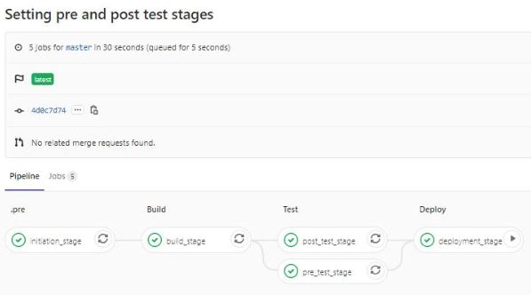

Note:
For this there are two servers both running CentOs7, configured in VirtualBox both with NAT Network Adaptor (for internet access) and Host-Only (for host to VM and VM to VM communication/ssh).
- GitLab (runnig both GitLab and GitLab-Runner).
- WebServer (hosting a web app in Apache/HTTPD server).
-
GitLab Installation
Install GitLab, checkout this: GitLab Installation, using GitLab Omnibus package -
GitLab-Runner installation and setup
Install gitlab-runner, checkout this: Install GitLab Runner using deb/rpm package -
Enveroment SetUp
Generate SSH Key in your GitLab Server and copy the corresponsing public key to the WebServer, checkout steps: Generating a passphraseless SSH key and use it to SSH to your Linux Server(s)
Generate SSH key in your WebServer and copy the corresponding public key and copy it to the GitLab GUI, checkout this: Adding an SSH key to your GitLab account -
CI/CD SetUp (the real magic)
Add.gitlab-ci.ymlin the root of your project and add appropriety command to suite your need, checkout the sample file: Sample GitLabgitlab-ci.yml
This file trigger a pipeline when developer push changes to master branch, it contains instruct of how shoult GitLab-runner excute commands, i.e. run test then ssh from GitLab to WebServer and deploy changes automatically
Screenshot
